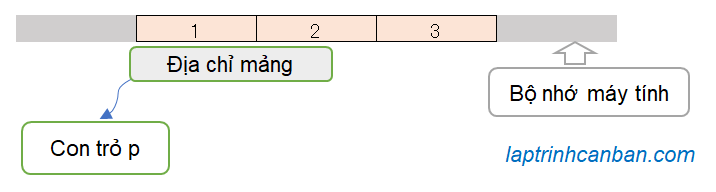
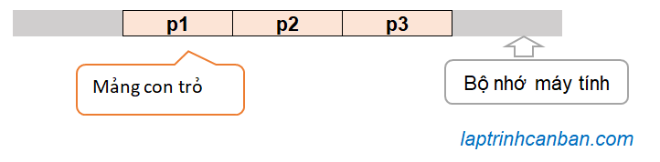

Cùng tìm hiểu về con trỏ mảng trong C++. Bạn sẽ biết cách sử dụng con trỏ để xử lý mảng trong C++ sau bài học này.
Con trỏ mảng trong C++ là gì
Trong bài Con trỏ trong C++ là gì chúng ta đã biết, con trỏ trong C++ là một biến được dùng để lưu trữ địa chỉ của dữ liệu trong bộ nhớ máy tính.
Mảng cũng là một loại dữ liệu trong C++, và do đó, chúng ta cũng có thể sử dụng con trỏ để lưu trữ địa chỉ và qua đó thao tác với chúng. Chúng ta gọi con trỏ sử dụng trong mảng là con trỏ mảng trong C++.

Bằng cách sử dụng con trỏ mảng trong C++, chúng ta có thể truy cập vào địa chỉ của mảng mà nó chỉ đến trong bộ nhớ, cũng như là thao tác và xử lý trực tiếp với mảng này. Lại nữa, chúng ta cũng có thể sử dụng con trỏ mảng để xử lý gián tiếp mảng trong hàm, qua đó nâng cao việc sử dụng hiệu quả bộ nhớ và giảm thời gian thực thi chương trình.
Do đó, con trỏ mảng trong C++ là phần kiến thức không thể thiếu mà một lập trình viên về C++ cần phải nắm vững.
Có 2 loại con trỏ mảng trong C++ tùy thuộc vào kiểu mảng mà chúng lưu giữ địa chỉ, đó chính là con trỏ mảng 1 chiều trong C++ và con trỏ mảng đa chiều trong C++. Trong đó chúng ta hay sử dụng loại con trỏ mảng đa chiều trong C++ nhiều nhất đó chính là con trỏ mảng 2 chiều trong C++.
Về con trỏ mảng 2 chiều trong C++, Kiyoshi cũng đã phân tích rất kỹ trong bài viết Con trỏ mảng 2 chiều trong C++. Trong khuôn khổ bài viết này, chúng ta sẽ cùng làm rõ về con trỏ mảng 1 chiều trong C++ nhé.
Khai báo con trỏ mảng trong C++
Cách khai báo con trỏ chuỗi trong C++ cũng tương tự như cách khai báo các loại con trỏ khác. Chúng ta viết kiểu của con trỏ, tiếp theo là dấu hoa thị * và tên của con trỏ với cú pháp sau đây:
type *p;
Trong đó type là kiểu dữ liệu của con trỏ chuỗi, và p là tên con trỏ. Lưu ý kiểu type của con trỏ phải giống với kiểu của mảng mà nó gán địa chỉ.
Sau khi khai báo con trỏ mảng, chúng ta có thể tiến hành gán địa chỉ của mảng cho nó.
Tuy nhiên khác với cách gán địa chỉ cho con trỏ với các loại dữ liệu khác thì với con trỏ mảng trong C++, chúng ta không dùng toán tử & khi gán địa chỉ của mảng cho con trỏ.
Khi khai báo một mảng, tên biến dùng để khai báo mảng sẽ biểu thị địa chỉ của điểm bắt đầu của vùng lưu mảng trong bộ nhớ.
Do tên biến dùng để khai báo mảng đã là một địa chỉ, nên khi gán địa chỉ của mảng cho con trỏ, chúng ta không cần thêm toán tử & như các loại dữ liệu khác.
Ngược lại, nếu bạn viết thêm toán tử & thì khi biên dịch sẽ xảy ra lỗi.
Ví dụ khi gán địa chỉ của biến hay cấu trúc cho con trỏ, chúng ta cần dùng tới toán tử &.
//Gán địa chỉ biến cho con trỏ |
Tuy nhiên chúng ta lại không cần tới toán tử & khi gán địa chỉ mảng cho con trỏ.
int nums[] = {1,2,3,4}, *p; |
Con trỏ và địa chỉ trong mảng
Con trỏ mảng biểu thị địa chỉ của điểm bắt đầu mảng trong bộ nhớ
Con trỏ mảng biểu thị địa chỉ của điểm bắt đầu vùng lưu trữ mảng trong bộ nhớ. Địa chỉ này cũng chính là địa chỉ của phần tử đầu tiên (có index bằng 0) của mảng trong bộ nhớ.
Sau khi gán địa chỉ của mảng cho con trỏ, chúng ta có thể xuất ra địa chỉ của điểm bắt đầu mảng (cũng chính là địa chỉ của phần tử đầu tiên) được lưu vào con trỏ bằng cách in giá trị của con trỏ mảng như sau:
|
Có thể thấy rõ, địa chỉ của phần tử đầu tiên trong mảng (có giá trị 10) đã được lưu vào trong con trỏ mảng như ví dụ trên.
Chỉ định địa chỉ trong mảng thông qua dịch chuyển con trỏ
Chúng ta dịch chuyển con trỏ bằng cách cộng trừ nó cho một số đơn vị. Và bằng cách dịch chuyển con trỏ, chúng ta có thể chỉ định tới một địa chỉ trong mảng mà chúng ta cần làm việc với phần tử tại địa chỉ đó.
Ví dụ, do con trỏ p biểu thị địa chỉ trỏ tới phần tử đầu tiên (index bằng 0), nên chúng ta có thể chỉ định địa chỉ của phần tử thứ 2 (có index bằng 1) trong mảng bằng cách cộng thêm 1 đơn vị vào con trỏ, hoặc phần tử thứ 4 (có index bằng 3) trong mảng bằng cách cộng thêm 3 đơn vị vào con trỏ như sau:
|
Kết quả, bằng cách dịch chuyển con trỏ 1 đơn vị hoặc một số đơn vị, chúng ta có thể chỉ định các địa chỉ của các phần tử trong mảng như sau:
array[0] address: 2039942224 |
Hãy chú ý vào địa chỉ của array[0] và array[1]. Mặc dù dịch chuyển con trỏ 1 đơn vị, nhưng bạn có thể thấy địa chỉ trên bộ nhớ được dịch chuyển tới 4 byte như trên. Lý do là bởi 1 phần tử trong mảng số kiểu int có kích thước là 4 byte, nên khi dịch chuyển sang 1 phần tử trong mảng, thì địa chỉ trên bộ nhớ sẽ được dịch chuyển tương ứng là 4 byte.
Truy xuất giá trị phần tử trong mảng bằng con trỏ
Trong bài Con trỏ trong C++ là gì chúng ta đã biết để truy xuất giá trị tại vị trí con trỏ chỉ đến, chúng ta viết dấu hoa thị * vào đằng trước tên con trỏ.
Cách truy xuất các ký tự trong mảng bằng con trỏ cũng tương tự như vậy.
Giả sử chúng ta có mảng array và cho con trỏ mảng p lưu địa chỉ của nó như sau:
int a[n], *p; |
Thông thường để truy cập vào phần tử trong mảng, chúng ta chỉ định index của phần tử đó, ví dụ như a[0] hoặc a[1] chẳng hạn.
Tuy nhiên bằng cách kết hợp tên con trỏ với dấu hoa thị *, chúng ta cũng có thể truy cập và lấy giá trị của các phần tử trong mảng array với cú pháp sau đây:
*(p + index);
Trong đó index là index của phần tử cần lấy giá trị trong mảng và p là con trỏ mảng.
Ỏ đây, (p + index) có ý nghĩa tăng con trỏ một số index đơn vị, nhằm chỉ định địa chỉ của phần tử cần truy cập trên bộ nhớ. Và việc thêm hoa thị *(p + index) nhằm lấy giá trị phần tử tại vị trí này.
Và trong trường hợp index bằng 0, chúng ta có thể hiểu rằng cách viết *p biểu thị giá trị của phần tử đầu tiên trong mảng.
Cách truy cập vào phần tử trong mảng bằng index và bằng con trỏ có thể so sánh như bảng dưới đây:
| index | Truy xuất bằng mảng | Truy xuất bằng con trỏ |
|---|---|---|
| 0 | a[0] | *p |
| 1 | a[1] | *(p + 1) |
| 2 | a[2] | *(p + 2) |
| 3 | a[3] | *(p + 3) |
| … | … | … |
| n | a[n] | *(p + n) |
Ví dụ cụ thể:
|
Kết quả, mảng và con trỏ đều đưa ra kết quả truy xuất giá trị phần tử giống nhau như sau:
30 |
Nhập xuất mảng bằng con trỏ trong C++
Bằng cách sử dụng con trỏ mảng, chúng ta có thể chỉ định vị trí các phần tử trong mảng, cũng như là truy cập và lấy giá trị của các phần tử đó.
Ứng dụng điều này, chúng ta cũng có thể nhập xuất mảng bằng con trỏ trong C++ như sau.
Nhập mảng bằng con trỏ trong C++
Trong bài Nhập xuất mảng trong C++ chúng ta đã biết cách tạo hàm nhập trực tiếp các giá trị từ bàn phím vào mảng như sau:
/*Tạo hàm nhập mảng 1 chiều trong C++*/ |
Trong đó array và length lần lượt là tên và độ dài (số phần tử) của mảng cần nhập.
Để nhập mảng bằng con trỏ trong C++ chúng ta chỉ cần sử dụng giá trị con trỏ thay cho mảng, và thay vì dùng index để chỉ định vị trí nhập dữ liệu, thì chúng ta sẽ sử dụng trực tiếp giá trị con trỏ để chỉ định vị trí cần nhập. Chúng ta viết hàm nhập mảng bằng con trỏ trong C++ như sau:
/*Tạo hàm nhập mảng bằng con trỏ trong C++*/ |
Lưu ý tại đây chúng ta sử dụng lệnh cin để nhập dữ liệu vào mảng, nên cần chỉ định bản thân dữ liệu mà con trỏ chỉ đến bằng cách thêm dấu hoa thị * trước con trỏ.
Tuy nhiên nếu sử dụng hàm scanf được kế thừa từ ngôn ngữ C để nhập mảng bằng con trỏ trong C++, thay vì chỉ định dữ liệu thì chúng ta cần chỉ định địa chỉ của dữ liệu đã được lưu vào con trỏ như sau:
/*Tạo hàm nhập mảng bằng con trỏ trong C*/ |
Xuất mảng bằng con trỏ trong C++
Trong bài xuất xuất mảng trong C++ chúng ta đã biết cách tạo hàm xuất trực tiếp các giá trị của mảng như sau:
/*Tạo hàm xuất mảng 1 chiều trong C++*/ |
Trong đó array và length lần lượt là tên và độ dài (số phần tử) của mảng cần xuất.
Để xuất mảng bằng con trỏ trong C++ chúng ta chỉ cần sử dụng con trỏ thay cho mảng, và thay vì truy xuất giá trị các phần tử của mảng bằng index thì chúng ta sẽ dùng tên con trỏ và dấu hoa thị để xuất giá trị đó. Chúng ta viết hàm xuất mảng bằng con trỏ trong C++ như sau:
/*Tạo hàm xuất mảng bằng con trỏ trong C++*/ |
Chương trình mẫu nhập xuất mảng bằng con trỏ trong C++
Dưới đây là chương trình mẫu sử dụng các hàm trên để nhập xuất mảng bằng con trỏ trong C++:
|
Kết quả:
>>Nhap so phan tu: 5 |
Phân biệt con trỏ mảng và mảng con trỏ
Khi học về con trỏ, có 2 khái niệm hay khiến chúng ta nhầm lẫn đó chính là con trỏ mảng và mảng con trỏ. Đây là hai khái niệm chỉ 2 loại đối tượng khác nhau và chúng ta cần phân biệt chúng như sau:
Con trỏ mảng là con trỏ được tạo ra để lưu trữ địa chỉ của một mảng trong bộ nhớ máy tính. Ví dụ con trỏ p lưu địa chỉ của mảng A chẳng hạn.
Mảng con trỏ là một mảng chứa phần tử là các con trỏ. Do con trỏ cũng là một biến chứa giá trị, nên chúng ta cũng có thể lưu trữ chúng như là phần tử trong cùng một mảng. Ví dụ như mảng B chứa phần tử là các con trỏ p1, p2 và p3 chẳng hạn.

Tổng kết
Trên đây Kiyoshi đã hướng dẫn các bạn về con trỏ mảng trong C++ rồi. Để nắm rõ nội dung bài học hơn, bạn hãy thực hành viết lại các ví dụ của ngày hôm nay nhé.
Và hãy cùng tìm hiểu những kiến thức sâu hơn về C++ trong các bài học tiếp theo.
URL Link
https://laptrinhcanban.com/cpp/lap-trinh-cpp-co-ban/mang-trong-cpp/con-tro-mang-trong-cpp/
HOME › lập trình c++ cơ bản dành cho người mới học lập trình>>17. mảng trong c++